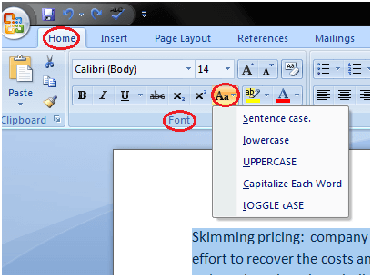
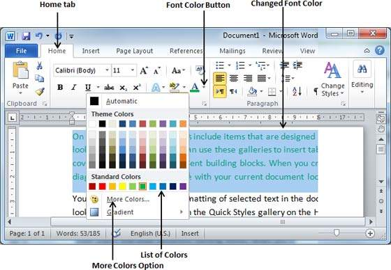

You can easily change the text case in your document by following the steps given below;
The case menu offers four options;
Sentence case: It capitalizes the first letter of each sentence.
Lowercase: It changes the text from uppercase to lowercase.
Uppercase: It capitalizes all the all letters of your text.
Capitalize Each Word: It capitalizes the first letter of each word.
Toggle Case: It allows you to shift between two case views, e.g. to shift between Capitalize Each Word and cAPITALIZE eACH wORD .
See the image:

The text that we type comes in black by default; you can always change the color of the font to a color of your choice. It is very simple to change the text color by following two simple steps −
Step 1 − Select the portion of text the font color of which needs to be changed. You can use any of the text selection method to select the portion of text.
Step 2 − Click the Font Color button triangle to display a list of colors. Try to move your mouse pointer over different colors and you will see the text color will change automatically. You can select any of the colors available by simply clicking over it.
If you click at the left portion of the Font Color button, the selected color gets applied to the text automatically; you need to click over the small triangle to display a list of colors.
